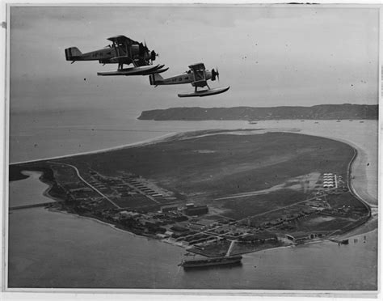

The Cold War at Home
and Abroad
In September 1949, a nine-year-old girl named Barbara sat in her elementary school classroom in suburban Chicago. Her teacher told her to get under her desk, cover her neck with her hands, and close her eyes. This was a duck-and-cover drill. Barbara had no idea what she was supposed to be hiding from. The answer was a Soviet nuclear bomb. The United States and the Soviet Union had never fired a single shot at each other — but the fear of what either side might do was already changing everything about how Americans lived, worked, and thought.
Two Powers, One Divided World

When World War II ended in 1945, the United States and the Soviet Union were the only two great powers left standing. Every other major nation had been devastated by the war. These two countries were enormously powerful. They were also completely different. The United States was a democracy with a capitalist economy — meaning businesses were privately owned and people could vote for their leaders. The Soviet Union was a communist dictatorship — meaning the government owned all businesses and one political party controlled everything.
During the war, these two countries had fought side by side against Hitler. But the moment Germany surrendered, their alliance fell apart. The Soviets had suffered over 20 million deaths in the war and were determined never to be invaded from the west again. They installed communist governments in every Eastern European country their army occupied: Poland, Czechoslovakia, Hungary, Romania, Bulgaria, and East Germany. Winston Churchill, Britain's wartime prime minister, gave this division a name in 1946: the Iron Curtain, a line dividing free Europe from communist Europe.
What made this rivalry different from any war before it was the weapons. By 1949, both the United States and the Soviet Union had nuclear weapons. A war between them would not just destroy armies; it could destroy civilization. So instead of fighting each other directly, they competed everywhere else: in Europe, Asia, the Middle East, Africa, and Latin America. They funded rival governments, trained rival armies, and tried to pull every country in the world toward their side. This competition was called the Cold War because it never became a hot war — a shooting war between the two superpowers directly.
The United Nations was created in 1945 specifically to prevent another world war. Its charter committed all member nations to resolve conflicts through negotiation rather than violence. But the Cold War quickly revealed the UN's limits: the United States and the Soviet Union both sat on the Security Council, and each could block any action the other proposed. The world had a referee, but the two biggest players could veto every call.
Containment: Holding the Line Against Communism
American leaders faced a central question in 1946: what do we do about the Soviet Union? Some argued for confrontation. Others called for diplomacy. A diplomat named George Kennan provided the answer that shaped the next four decades of American foreign policy. In a famous 1946 telegram from Moscow and a 1947 article published anonymously, Kennan argued that the Soviet Union was not going to start a direct war; it would expand slowly by supporting communist movements in weak or unstable countries. The American response, he said, should be containmentThe U.S. foreign policy strategy of preventing communism from spreading to new countries by using military, economic, and diplomatic pressure around the world.: not rolling back communism where it already existed, but preventing it from spreading anywhere new.

Containment became real policy fast. In early 1947, communist guerrillas were fighting to take over Greece and Turkey. Britain, which had been supporting both governments, told Washington it could no longer afford to keep doing so. President Truman went before Congress on March 12, 1947, and asked for $400 million in aid for Greece and Turkey. His speech went further than just those two countries. He declared that the United States would support any free people resisting communist takeover, anywhere in the world. This became known as the Truman Doctrine. It transformed the United States from a country that had just years earlier tried to stay out of the world's problems into a country that now committed itself to managing those problems everywhere.
The first major test of containment came not in Europe but in Asia. After World War II, the Korean Peninsula had been divided at the 38th parallel: the communist North Korean government backed by the Soviet Union and China sat above the line; the U.S.-backed South Korean government sat below it. On June 25, 1950, North Korea invaded South Korea with a massive army. Truman sent American troops under the umbrella of the United Nations. The Berlin BlockadeThe Soviet Union's 1948 attempt to starve West Berlin into submission by blocking all road and rail access to the city, defeated by a massive U.S.-led airlift that flew supplies in for nearly a year. had already tested American resolve in Europe; now Korea tested it in Asia.
The Korean War lasted three years, from 1950 to 1953. Over 36,000 Americans died. More than a million Korean civilians were killed. The war ended in a stalemate; the border between North and South Korea returned almost exactly to where it had been before the war. Korea became a preview of wars to come: American soldiers dying not to defeat an enemy nation completely, but simply to hold a line and prevent communist expansion. The 38th parallel still divides North and South Korea today, making it the longest-standing consequence of Cold War containment still visible on any map.
"I believe that it must be the policy of the United States to support free peoples who are resisting attempted subjugation by armed minorities or by outside pressures. I believe that we must assist free peoples to work out their own destinies in their own way."President Harry S. Truman, Address to Congress, March 12, 1947.
Truman is telling Congress that the United States has a responsibility to help any country that is trying to stay free — and that if America does not step in, communist forces will take over one country after another until the whole world shifts toward the Soviet side.
Question 1: What exactly is Truman promising to do? What does the word "subjugation" mean, and what does Truman say is causing it?
Question 2: The EQ asks how fear of communism reshaped American foreign policy. How does this speech show a major shift in what the United States was now willing to do in the world?

Fear at Home: McCarthyism and the Red Scare

The Cold War did not stay overseas. It came home. By 1950, Americans were frightened. The Soviet Union had the bomb. China had gone communist. And spies had been caught: Julius and Ethel Rosenberg were arrested in 1950 for passing nuclear secrets to the Soviets. Fear spread fast: if spies could hide in plain sight, who else might be secretly working for the enemy?
Into this atmosphere stepped Senator Joseph McCarthy of Wisconsin. On February 9, 1950, McCarthy stood up at a Republican club dinner in Wheeling, West Virginia, and waved a piece of paper. He claimed it contained the names of 205 card-carrying communists who were working inside the State Department. He had no real evidence. But in the climate of fear that gripped the country, the accusation was enough. McCarthyismThe practice of making accusations of communist activity against people without real evidence, named after Senator Joseph McCarthy who ruined hundreds of careers with unproven charges in the early 1950s. was born.
McCarthy held hearings. He accused military officers, diplomats, professors, journalists, and government workers of being secret communists. His tactic was simple: accuse loudly, demand people prove their innocence, and move on before the facts could catch up. The accused had almost no legal protections. Simply being called before McCarthy's committee was enough to end a career. Friends turned on friends. People named names to save themselves. The fear spread from government into every part of American life.
The HUACThe House Un-American Activities Committee — a congressional committee that investigated suspected communist influence in American society, especially in Hollywood, from the 1940s through the 1950s. — the House Un-American Activities Committee — had been investigating suspected communists since 1947. Its most famous targets were Hollywood writers and directors. Ten screenwriters and directors, known as the Hollywood Ten, refused to answer HUAC's questions and were sent to prison for contempt of Congress. Hundreds more were put on a blacklist: a secret list of people that studios and employers refused to hire. Careers and lives were destroyed based on accusations alone.
"Until this moment, Senator, I think I never really gauged your cruelty or your recklessness. Have you no sense of decency, sir? At long last, have you left no sense of decency?"Joseph Welch, chief Army counsel, to Senator Joseph McCarthy, Army-McCarthy Hearings, June 9, 1954.
Welch was the lawyer defending the U.S. Army against McCarthy's wild accusations — and when McCarthy attacked a young lawyer on Welch's staff who had nothing to do with the hearings, Welch stopped him in front of the entire nation watching on live television; this moment broke McCarthy's power almost overnight.
McCarthy's downfall came in 1954, when he went too far. He accused the U.S. Army itself of harboring communists. The Army-McCarthy hearings were televised nationally. For 36 days, millions of Americans watched McCarthy bully and threaten witnesses. When he attacked a young associate lawyer with no connection to any communist activity, the Army's chief counsel, Joseph Welch, turned to him and asked the question that ended McCarthy's career: "Have you no sense of decency, sir?" The audience broke into applause. The Senate voted later that year to censure McCarthy — officially condemn him. He died in 1957, largely forgotten. But the damage was done. The word "McCarthyism" entered the language as a warning about what happens when fear replaces facts.
San Diego on the Front Lines: Cold War Military and the Loyalty Oath

San Diego was one of the most militarized cities in the Cold War United States. The Pacific Fleet was headquartered here. Naval Air Station North Island, Miramar, and Camp Pendleton placed tens of thousands of military personnel directly inside the city's economy and culture. Cold War spending drove San Diego's postwar growth more than almost any other factor.
The Red Scare hit California institutions directly: in 1950, the University of California required all faculty to sign a loyalty oath swearing they were not communists. Over 30 UC professors refused on principle and were fired. The California Loyalty Oath controversy became a national flashpoint for the debate between security and academic freedom — a debate that reached directly into classrooms like those at San Diego State College (now SDSU).
The Nuclear Age: Living Under the Bomb


In August 1949, the Soviet Union detonated its first atomic bomb. Americans had believed they had years of nuclear advantage left. The news hit like a shock. The arms race was on. Both countries began building bigger, more powerful weapons. By the mid-1950s, both the U.S. and USSR had hydrogen bombs: weapons hundreds of times more powerful than the ones dropped on Japan. A single hydrogen bomb could destroy an entire city and kill every person in it within seconds.
American military planners developed a strategy called deterrenceA strategy of preventing enemy attack by making sure the punishment for attacking would be so catastrophic that no rational leader would ever start a war.. The idea was simple but terrifying: the United States would keep enough nuclear weapons aimed at Soviet cities that any Soviet attack on America would be instantly met with a counter-strike that destroyed the Soviet Union too. Both sides would be destroyed. Neither side would start a war. This policy had a grimly accurate name: Mutually Assured Destruction, or MAD.
The bomb changed daily life in ways large and small. The federal government built a network of fallout shelters in cities across the country. Families were encouraged to build personal bomb shelters in their backyards and stock them with food and water. Schools ran duck-and-cover drills where children practiced hiding under their desks. Civil defense agencies produced films explaining what to do when the bombs fell. None of these preparations would have mattered in a real nuclear war, but they gave the government and the public a sense of doing something about a threat that had no real solution.
If you are caught outside during a nuclear attack: fall flat on the ground or crouch behind a wall. Cover your eyes. Do not look at the flash. After the blast, go immediately to a shelter. Avoid fallout areas. Stay tuned to your radio for further instructions.

The nuclear arms race also drove the space race. In 1957, the Soviet Union launched Sputnik: the first artificial satellite to orbit the Earth. Americans panicked. If the Soviets could put a satellite into orbit, they could put a nuclear warhead anywhere on the planet. The United States poured money into science education and the newly created NASA. The competition to reach space was also a competition to prove whose system — democracy or communism — could do more.
Military alliances hardened the Cold War's global structure. In 1949, the United States and Western European nations formed NATO: the North Atlantic Treaty Organization. Its key rule was that an attack on any member was an attack on all members. The Soviet Union responded in 1955 by forming the Warsaw Pact with its Eastern European satellite states. The world was now organized into two armed camps. Every country on Earth was expected to choose a side.

Today, many countries that were once part of the Warsaw Pact are now NATO members. The alliance that was built to stop Soviet expansion in 1949 is still operating, still expanding, and still debated. When Russia invaded Ukraine in 2022, NATO's original promise — that an attack on a neighbor is an attack on all — suddenly felt less like Cold War history and more like this morning's news.
The Cold War never fully ended. Its weapons, its alliances, and its habit of using fear to silence people are all still with us.
Nuclear weapons still exist in the thousands. NATO is still the main alliance defending Europe. And the question of how much freedom a government can take away in the name of national security is still being argued in courtrooms, legislatures, and schools right now.
- "NATO and Russia: How the Cold War Never Really Ended" — BBC News
- "Russia's War in Ukraine Revives Cold War Fears Across Europe" — The New York Times
- "The Echoes of McCarthyism: When Accusation Becomes Proof" — The Washington Post

If the government told you that someone you knew was secretly working for an enemy country, but showed you no evidence — just an accusation — would you believe it? And what would you want to happen to that person?